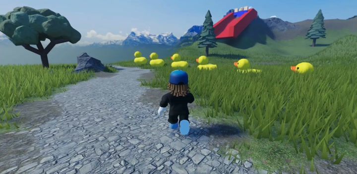
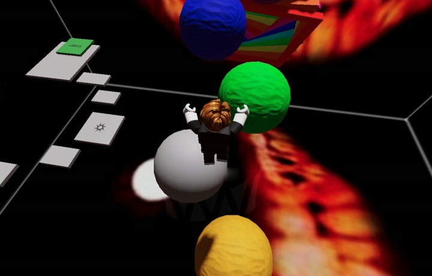

※これまでの参加記録・アンケート集計より
ゲーム制作に特化した教室です
「ゲームを作りたい」という欲求は普遍的です。
この好奇心を大切に「必要そうだからプログラミングを教える」のではなく、「興味のあるゲーム制作を通して、形にしていくプロセス」を大切にしていきます。
文法よりも、企画と設計。つまり「どうすれば実現していくか」を主役にします。
プロが直接みます
ゲームプランナー歴20年以上の講師が毎回直接指導。現場のリアルな視点で、お子さんの発想を形に変えます。
特性から逆算します
ゲーム制作はプログラミングだけではありません。企画・デザイン・サウンド・AIなど、お子さんの「好き」と「得意」に合ったアプローチを一緒に探します。
業界ネットワークで広がる
3D・音楽・プログラミングなど、各分野の専門クリエイターと連携。講師の得意分野以外も、本物のプロの視点を届けます。
ただのゲーム遊び vs 世界へ届けるクリエイター
- 遊んで終わり
- 仕組みは分からない
- 発想が広がらない
- ルールを設計する
- 面白さを言語化できる
- 世界へ公開できる
まずは体験してみる
体験会では2つのコースを同日開催しています。どちらから始めるかを選んでください。


カリキュラム一覧
体験用はプログラミングなしで初めての方向け、プログラミングは仕組みや動きをコードで作る教材、クリエイティブはデザインや演出など「表現」を楽しむ教材です。
カリキュラムを読み込み中…
続けていく選択肢
体験会のあとに、続け方を選べます。オリジナルの企画・作品づくりは、どちらのプランにも追加できるオプションです。途中での切り替えも相談しながら調整できます。
イベントページからお申し込み。特定の会場（路地裏など）で開催します。
- 通常プラン継続（同じ会場、既存カリキュラム）
- 個別プラン（オンライン・自宅、場所とペースを合わせる）※現在準備中
通常プラン・個別プランどちらでも追加できます。
みんなで一緒に学び・制作するスタイルです。同じ会場で、既存カリキュラムから日程とコースを選んでお申し込みください。
場所や時間を、お子さんのペースに合わせて選べるスタイルです。学ぶ内容は通常プランと同じカリキュラムから選べます。担当講師から専用ページをご案内し、日程などを選んでいただきます。（現在準備中）
ご希望の方は、体験会当日にスタッフへお申し付けください。公式LINEにご招待いたします。
オリジナルの企画・作品づくりに挑戦したい方は、通常プラン・個別プランどちらでもオプションとしてご相談いただけます。
参加したご家族の声
アンケートにいただいた声を、原文のまま掲載しています（氏名は伏せています）。掲載の許可をいただいたもののみ載せています。
「子供達が楽しそうにゲームを作成していて参加してよかったです」
「あい手の作ったゲームをプレイしたこと」
「友だちのゲーム」
開催日程
各イベントをタップすると詳細とタイムテーブルを確認できます。
講師紹介
主催: 星 弘高（ゲーム企画職）
ゲーム業界歴20年以上。コンソールからスマホゲームまで幅広く開発・運営。
現在はフリーランスとして活動し、こども向けゲームクリエイターワークショップを運営。
この活動に込めた想い
子どもたちは、もう「面白さの設計」を頭の中に持っている。
RobloxとAIを見た甥が、勝手に企画会議を始めた光景で確信しました。
プログラミング教室はあっても「作り方」を教える場所は少ない。
だから、遊びから逆算して学ぶ"企画の入口"を用意したい。
日本からも、10代でヒットを出す時代を作りたい。
よくある質問
A: はい、まったく経験がなくても大丈夫です。マウス操作ができると良いですが、その場でも使い方を教えることもできます。
A: 会場でご用意しています。持参しても構いません。
A: 小学生のお子さまは保護者の同伴を推奨しています。中学生以上は単独参加も可能です。保護者の方のご参加・見学も大歓迎です（お申し込みください）。
A: はい。決められたテーマに沿って作ることもできます。
A: はい。教材を回ごとに切り替えているので、毎回違うゲーム作りを体験できます。前回の続きを作り込むこともできます。
A: あります。日程とカリキュラムを選んで通う「通常プラン」と、場所やペースをお子さんに合わせて選べる「個別プラン」（オンライン・自宅、詳細は別途ご相談ください）があります。オリジナルの企画・作品づくりに挑戦したい場合は、どちらのプランでもオプションとしてご相談いただけます。体験会と教材が共通なので、続きからスムーズに始められます。個別プランをご希望の方は、体験会当日にスタッフへお申し付けください。公式LINEにご招待いたします。
A: 体験会はRobloxコース 1,900円／AIコース 900円（当日現金払い・今だけのお試し価格）です。通常プランの料金は体験会と同じ金額で個別プランの料金は、個別にご案内しています。
作品ギャラリー
ワークショップで生まれた作品（講師コメント付き）
講師コメント: 赤い照明でホラーの雰囲気を作り込んだアスレチック。難易度が高く、先生も何度もやられました。近道まで用意されていて、ギミックの配置が凝っています。

講師コメント: テーマもテンプレートも自由に選んでもらった一作。城の出入り口はオービーのカラフルな鉄格子、草原にはアヒルの群れ、滑り台には巨人。思いついたものを次々置いていく、サンドボックスの楽しさが出ています。

講師コメント: Scratchで培ったプログラミングの経験を活かして、回転する床に挑戦。しかもその回転を近道としても使えるように設計しているのが見事です。仕組み作りに時間をかけた分、限られた時間でよくまとめました。
講師コメント: 1作目は思ったとおりに作れず、「作りたいものを作るには、思っていることをちゃんと伝えないといけない」——先生との会話からそこに行き着いて、書き直した一作。1か月生き延びるタワーディフェンスで、支援ボックスから出た武器やペットを使い、家の中心のダイヤを守ります。
ブラウザでそのまま遊べる作品
まずは一度、遊びに来てください
地域密着の会場で、気軽に参加できます。
最新情報は公式Instagramでチェックしてください。
活動報告はnoteにもまとめています。